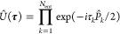
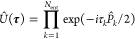
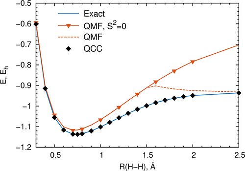
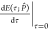
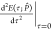
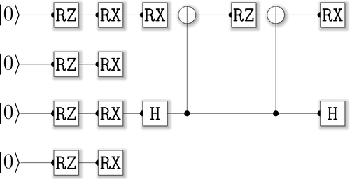
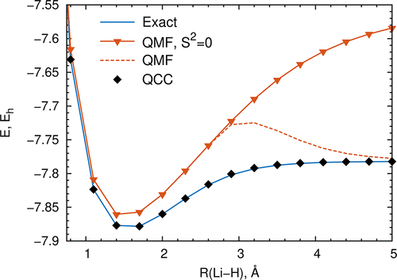
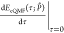
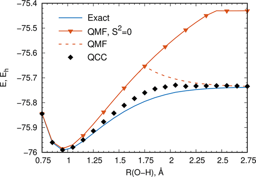

Qubit Coupled Cluster Method: A Systematic Approach to Quantum Chemistry on a Quantum Computer
- Ilya G. RyabinkinIlya G. RyabinkinDepartment of Physical and Environmental Sciences, University of Toronto Scarborough, Toronto, Ontario M1C 1A4, CanadaMore by Ilya G. Ryabinkin
- Tzu-Ching YenTzu-Ching YenDepartment of Physical and Environmental Sciences, University of Toronto Scarborough, Toronto, Ontario M1C 1A4, CanadaMore by Tzu-Ching Yen
- Scott N. GeninScott N. GeninOTI Lumionics Inc., 100 College Street #351, Toronto, Ontario M5G 1L5, CanadaMore by Scott N. Genin
- Artur F. Izmaylov*Artur F. Izmaylov*E-mail: artur.izmaylov@utoronto.ca.Department of Physical and Environmental Sciences, University of Toronto Scarborough, Toronto, Ontario M1C 1A4, CanadaChemical Physics Theory Group, Department of Chemistry, University of Toronto, Toronto, Ontario M5S 3H6, CanadaMore by Artur F. Izmaylov
Abstract
{kind=link}
A unitary coupled cluster (UCC) form for the wave function in the variational quantum eigensolver has been suggested as a systematic way to go beyond the mean-field approximation and include electron correlation in solving quantum chemistry problems on a quantum computer. Although being exact in the limit of including all possible coupled cluster excitations, practically, the accuracy of this approach depends on the number and type of terms are included in the wave function parametrization. Another difficulty of UCC is a growth of the number of simultaneously entangled qubits even at the fixed Fermionic excitation rank. Not all quantum computing architectures can cope with this growth. To address both problems, we introduce a qubit coupled cluster (QCC) method that starts directly in the qubit space and uses energy response estimates for ranking the importance of individual entanglers for the variational energy minimization. Also, we provide an exact factorization of a unitary rotation of more than two qubits to a product of two-qubit unitary rotations. Thus, the QCC method with the factorization technique can be limited to only two-qubit entanglement gates and allows for very efficient use of quantum resources in terms of the number of coupled cluster operators. The method performance is illustrated by calculating ground-state potential energy curves of H2 and LiH molecules with chemical accuracy, ≤1 kcal/mol, and a symmetric water dissociation curve.
2.1. Qubit Coupled Cluster Method
 (14)where |Ω⟩ and Û(τ)
represent the mean-field and correlation parts of a wave function. The
mean-field wave function is a product of single-qubit coherent states(23−26)
(14)where |Ω⟩ and Û(τ)
represent the mean-field and correlation parts of a wave function. The
mean-field wave function is a product of single-qubit coherent states(23−26) where ϕi and θi are azimuthal and polar angles on the “Bloch sphere” of the ith qubit, respectively, and |α⟩ and |β⟩ are spin-up and spin-down eigenstates of the ŝz(i) = ẑi/2
operator. The single-qubit coherent states constitute a normalized but
nonorthogonal complete set. Correlation is introduced by multiqubit
rotations parametrized by real-valued amplitudes τ = {τk} as(17)where P̂k are the Pauli words (eq 5) whose lengths vary from 2 to Nq, Nent is less or equal to the total number of possible P̂k operators, 4Nq – 3Nq – 1, and a factor of 1/2 is introduced for convenience.
where ϕi and θi are azimuthal and polar angles on the “Bloch sphere” of the ith qubit, respectively, and |α⟩ and |β⟩ are spin-up and spin-down eigenstates of the ŝz(i) = ẑi/2
operator. The single-qubit coherent states constitute a normalized but
nonorthogonal complete set. Correlation is introduced by multiqubit
rotations parametrized by real-valued amplitudes τ = {τk} as(17)where P̂k are the Pauli words (eq 5) whose lengths vary from 2 to Nq, Nent is less or equal to the total number of possible P̂k operators, 4Nq – 3Nq – 1, and a factor of 1/2 is introduced for convenience.2.2. Entanglers’ Ranking
2.3. Factorization of Multiqubit Entanglers
3. Numerical Studies and Discussion
3.1. Fermionic Hamiltonian Quantities
3.2. Generation of Qubit Operators
H2 Molecule
LiH Molecule
H2O Molecule
3.3. Potential Energy Curves
Figure 1
Figure 1. Potential energy curves for the H2 molecule.
{kind=link}
Entanglers for H2
| entangler P̂ |  |  | ΔE[P] |
|---|---|---|---|
| x̂2ŷ0 | –0.1968 | 0.5343 | –0.0350 |
| ŷ2x̂0 | 0.1968 | 0.5343 | –0.0350 |
| ẑ2ŷ0 | 0.000000 | –0.0509 | –0.0350 |
| ẑ2x̂0 | 0.000000 | –0.0509 | –0.0350 |
| ŷ2ẑ0 | 0.000000 | –0.0493 | –0.0350 |
| x̂2ẑ0 | 0.000000 | –0.0493 | –0.0350 |
Figure 2
Figure 2. Sample quantum circuit representing the QCC ansatz for the H2 molecule on the Rigetti machine.
{kind=link}
Entanglers for LiH
Figure 3
Figure 3. Potential energy curves for the LiH molecule.
{kind=link}
| entangler P̂ |  | ΔE[P] |
|---|---|---|
| x̂2x̂1ŷ0 | –0.0792 | –0.0909 |
| ẑ3ŷ2ẑ1x̂0 | –0.0781 | –0.0909 |
| x̂2ŷ1x̂0 | –0.0792 | –0.0907 |
| ẑ3x̂2x̂1ŷ0 | –0.0792 | –0.0896 |
| x̂3ŷ2ẑ1x̂0 | –0.0792 | –0.0896 |
| ẑ3x̂2ŷ1x̂0 | –0.0792 | –0.0887 |
| ŷ3x̂2ẑ1x̂0 | –0.0792 | –0.0887 |
ΔE[P] are evaluated with respect to the symmetry constrained QMF energies.
Entanglers for H2O
Figure 4
Figure 4. Potential energy curves for the symmetric stretch of the water molecule.
{kind=link}
The Supporting Information is available free of charge on the ACS Publications website at DOI: 10.1021/acs.jctc.8b00932.
Several tables of H2, H2O, and LiH ranking data (ZIP)
The authors declare no competing financial interest.
Appendix: Qubit Coupled Cluster Energy Derivatives
 (44)Equation 44
can be interpreted as a linearized form of a nonlinear equation that
determines minimizing Bloch angles as functions of the amplitude in eq 21.
(44)Equation 44
can be interpreted as a linearized form of a nonlinear equation that
determines minimizing Bloch angles as functions of the amplitude in eq 21.Determining Missing Angles
Derivative Discontinuities
A.F.I. acknowledges financial support from Natural Sciences and Engineering Research Council of Canada (NSERC) through the Engage Plus grant.
This article references 37 other publications.
- 1Lloyd, S. Universal Quantum Simulators. Science 1996, 273, 1073– 1078, DOI: 10.1126/science.273.5278.1073[Crossref], [PubMed], [CAS], [Google Scholar]1https://chemport.cas.org/services/resolver?origin=ACS&resolution=options&coi=1%3ACAS%3A528%3ADyaK28XltFKrsrg%253D&md5=4080d6a135b9aa6da6964aeafeb0d85fUniversal quantum simulatorsLloyd, SethScience (Washington, D. C.) (1996), 273 (5278), 1073-1078CODEN: SCIEAS; ISSN:0036-8075. (American Association for the Advancement of Science)A review with more than 42 refs. Feynman's 1982 conjecture, that quantum computers can be programmed to simulate any local quantum system, is shown to be correct.
- 2Aspuru-Guzik, A.; Dutoi, A. D.; Love, P. J.; Head-Gordon, M. Simulated Quantum Computation of Molecular Energies. Science 2005, 309, 1704– 1707, DOI: 10.1126/science.1113479[Crossref], [PubMed], [CAS], [Google Scholar]2https://chemport.cas.org/services/resolver?origin=ACS&resolution=options&coi=1%3ACAS%3A528%3ADC%252BD2MXpvFCisrg%253D&md5=c11f20a70de762c9a4b933e4a35d0af3Simulated Quantum Computation of Molecular EnergiesAspuru-Guzik, Alan; Dutoi, Anthony D.; Love, Peter J.; Head-Gordon, MartinScience (Washington, DC, United States) (2005), 309 (5741), 1704-1707CODEN: SCIEAS; ISSN:0036-8075. (American Association for the Advancement of Science)The calcn. time for the energy of atoms and mols. scales exponentially with system size on a classical computer but polynomially using quantum algorithms. We demonstrate that such algorithms can be applied to problems of chem. interest using modest nos. of quantum bits. Calcns. of the water and lithium hydride mol. ground-state energies have been carried out on a quantum computer simulator using a recursive phase-estn. algorithm. The recursive algorithm reduces the no. of quantum bits required for the readout register from about 20 to 4. Mappings of the mol. wave function to the quantum bits are described. An adiabatic method for the prepn. of a good approx. ground-state wave function is described and demonstrated for a stretched hydrogen mol. The no. of quantum bits required scales linearly with the no. of basis functions, and the no. of gates required grows polynomially with the no. of quantum bits.
- 3Helgaker, T.; Jorgensen, P.; Olsen, J. Molecular Electronic-structure Theory; Wiley, 2000.
- 4Jordan, P.; Wigner, E. Über das Paulische Äquivalenzverbot. Eur. Phys. J. A 1928, 47, 631– 651, DOI: 10.1007/BF01331938
- 5Bravyi, S. B.; Kitaev, A. Y. Fermionic Quantum Computation. Ann. Phys. 2002, 298, 210– 226, DOI: 10.1006/aphy.2002.6254[Crossref], [CAS], [Google Scholar]5https://chemport.cas.org/services/resolver?origin=ACS&resolution=options&coi=1%3ACAS%3A528%3ADC%252BD38Xktlals7k%253D&md5=bf5f820b3807c536755f65324b1853e7Fermionic Quantum ComputationBravyi, Sergey B.; Kitaev, Alexei Yu.Annals of Physics (San Diego, CA, United States) (2002), 298 (1), 210-226CODEN: APNYA6; ISSN:0003-4916. (Elsevier Science)We define a model of quantum computation with local fermionic modes (LFMs)-sites which can be either empty or occupied by a fermion. With the std. correspondence between the Foch space of m LFMs and the Hilbert space of m qubits, simulation of one fermionic gate takes O(m) qubit gates and vice versa. We show that using different encodings, the simulation cost can be reduced to O(log m) and a const., resp. Nearest neighbors fermionic gates on a graph of bounded degree can be simulated at a const. cost. A universal set of fermionic gates is found. We also study computation with Majorana fermions which are basically halves of LFMs. Some connection to qubit quantum codes is made.
- 6Seeley, J. T.; Richard, M. J.; Love, P. J. The Bravyi-Kitaev transformation for quantum computation of electronic structure. J. Chem. Phys. 2012, 137, 224109– 224109, DOI: 10.1063/1.4768229[Crossref], [PubMed], [CAS], [Google Scholar]6https://chemport.cas.org/services/resolver?origin=ACS&resolution=options&coi=1%3ACAS%3A528%3ADC%252BC38XhvVaht7bP&md5=cbdf40b94f0d98c6aef9c9fb8d2af259The Bravyi-Kitaev transformation for quantum computation of electronic structureSeeley, Jacob T.; Richard, Martin J.; Love, Peter J.Journal of Chemical Physics (2012), 137 (22), 224109/1-224109/16CODEN: JCPSA6; ISSN:0021-9606. (American Institute of Physics)Quantum simulation is an important application of future quantum computers with applications in quantum chem., condensed matter, and beyond. Quantum simulation of fermionic systems presents a specific challenge. The Jordan-Wigner transformation allows for representation of a fermionic operator by O(n) qubit operations. Here, we develop an alternative method of simulating fermions with qubits, first proposed by Bravyi and Kitaev (2002) that reduces the simulation cost to O(log n) qubit operations for one fermionic operation. We apply this new Bravyi-Kitaev transformation to the task of simulating quantum chem. Hamiltonians, and give a detailed example for the simplest possible case of mol. hydrogen in a minimal basis. We show that the quantum circuit for simulating a single Trotter time step of the Bravyi-Kitaev derived Hamiltonian for H2 requires fewer gate applications than the equiv. circuit derived from the Jordan-Wigner transformation. Since the scaling of the Bravyi-Kitaev method is asymptotically better than the Jordan-Wigner method, this result for mol. hydrogen in a minimal basis demonstrates the superior efficiency of the Bravyi-Kitaev method for all quantum computations of electronic structure. (c) 2012 American Institute of Physics.
- 7Tranter, A.; Sofia, S.; Seeley, J.; Kaicher, M.; McClean, J.; Babbush, R.; Coveney, P. V.; Mintert, F.; Wilhelm, F.; Love, P. J. The Bravyi-Kitaev transformation: Properties and applications. Int. J. Quantum Chem. 2015, 115, 1431, DOI: 10.1002/qua.24969[Crossref], [CAS], [Google Scholar]7https://chemport.cas.org/services/resolver?origin=ACS&resolution=options&coi=1%3ACAS%3A528%3ADC%252BC2MXhtVyhtbnE&md5=e2630f4077c1ef8c774a7c5490631d34The Bravyi-Kitaev transformation: Properties and applicationsTranter, Andrew; Sofia, Sarah; Seeley, Jake; Kaicher, Michael; McClean, Jarrod; Babbush, Ryan; Coveney, Peter V.; Mintert, Florian; Wilhelm, Frank; Love, Peter J.International Journal of Quantum Chemistry (2015), 115 (19), 1431-1441CODEN: IJQCB2; ISSN:0020-7608. (John Wiley & Sons, Inc.)Quantum chem. is an important area of application for quantum computation. In particular, quantum algorithms applied to the electronic structure problem promise exact, efficient methods for detn. of the electronic energy of atoms and mols. The Bravyi-Kitaev transformation is a method of mapping the occupation state of a fermionic system onto qubits. This transformation maps the Hamiltonian of n interacting fermions to an O(log(n))-local Hamiltonian of n qubits. This is an improvement in locality over the Jordan-Wigner transformation, which results in an O(n)-local qubit Hamiltonian. We present the Bravyi-Kitaev transformation in detail, introducing the sets of qubits which must be acted on to change occupancy and parity of states in the occupation no. basis. We give recursive definitions of these sets and of the transformation and inverse transformation matrixes, which relate the occupation no. basis and the Bravyi-Kitaev basis. We then compare the use of the Jordan-Wigner and Bravyi-Kitaev Hamiltonians for the quantum simulation of methane using the STO-6G basis.
- 8Setia, K.; Whitfield, J. D. Bravyi-Kitaev Superfast simulation of fermions on a quantum computer. arXiv:1712.004446. arXiv.org ePrints archive. 2017; https://arxiv.org/abs/1712.00446, DOI: 10.1063/1.5019371
- 9Havlíček, V.; Troyer, M.; Whitfield, J. D. Operator locality in the quantum simulation of fermionic models. Phys. Rev. A: At., Mol., Opt. Phys. 2017, 95, 032332, DOI: 10.1103/PhysRevA.95.032332
- 10Abrams, D. S.; Lloyd, S. Simulation of Many-Body Fermi Systems on a Universal Quantum Computer. Phys. Rev. Lett. 1997, 79, 2586– 2589, DOI: 10.1103/PhysRevLett.79.2586[Crossref], [CAS], [Google Scholar]10https://chemport.cas.org/services/resolver?origin=ACS&resolution=options&coi=1%3ACAS%3A528%3ADyaK2sXmtlWms7c%253D&md5=b18ccfafacc7cceedc75b824505e4302Simulation of Many-Body Fermi Systems on a Universal Quantum ComputerAbrams, Daniel S.; Lloyd, SethPhysical Review Letters (1997), 79 (13), 2586-2589CODEN: PRLTAO; ISSN:0031-9007. (American Physical Society)We provide fast algorithms for simulating many-body Fermi systems on a universal quantum computer. Both first and second quantized descriptions are considered, and the relative computational complexities are detd. in each case. In order to accommodate fermions using a first quantized Hamiltonian, an efficient quantum algorithm for antisymmetrization is given. Finally, a simulation of the Hubbard model is discussed in detail.
- 11Abrams, D. S.; Lloyd, S. Quantum Algorithm Providing Exponential Speed Increase for Finding Eigenvalues and Eigenvectors. Phys. Rev. Lett. 1999, 83, 5162– 5165, DOI: 10.1103/PhysRevLett.83.5162[Crossref], [CAS], [Google Scholar]11https://chemport.cas.org/services/resolver?origin=ACS&resolution=options&coi=1%3ACAS%3A528%3ADyaK1MXnvVKltb4%253D&md5=3057339b9444ebcf194e2d7d33926ae8Quantum Algorithm Providing Exponential Speed Increase for Finding Eigenvalues and EigenvectorsAbrams, Daniel S.; Lloyd, SethPhysical Review Letters (1999), 83 (24), 5162-5165CODEN: PRLTAO; ISSN:0031-9007. (American Physical Society)We describe a new polynomial time quantum algorithm that uses the quantum fast Fourier transform to find eigenvalues and eigenvectors of a local Hamiltonian, and that can be applied in cases (commonly found in ab initio physics and chem. problems) for which all known classical algorithms require exponential time. Applications of the algorithm to specific problems are considered, and we find that classically intractable and interesting problems from at. physics may be solved with between 50 and 100 quantum bits.
- 12Nielsen, M.; Chuang, I. Quantum Computation and Quantum Information: 10th Anniversary Edition; Cambridge University Press, 2010.
- 13Peruzzo, A.; McClean, J.; Shadbolt, P.; Yung, M.-H.; Zhou, X.-Q.; Love, P. J.; Aspuru-Guzik, A.; O’Brien, J. L. A variational eigenvalue solver on a photonic quantum processor. Nat. Commun. 2014, 5, 4213, DOI: 10.1038/ncomms5213[Crossref], [PubMed], [CAS], [Google Scholar]13https://chemport.cas.org/services/resolver?origin=ACS&resolution=options&coi=1%3ACAS%3A528%3ADC%252BC2cXitVShsbvM&md5=24adc3eeee68110a19e2f43020062e90A variational eigenvalue solver on a photonic quantum processorPeruzzo, Alberto; McClean, Jarrod; Shadbolt, Peter; Yung, Man-Hong; Zhou, Xiao-Qi; Love, Peter J.; Aspuru-Guzik, Alan; O'Brien, Jeremy L.Nature Communications (2014), 5 (), 4213CODEN: NCAOBW; ISSN:2041-1723. (Nature Publishing Group)Quantum computers promise to efficiently solve important problems that are intractable on a conventional computer. For quantum systems, where the phys. dimension grows exponentially, finding the eigenvalues of certain operators is one such intractable problem and remains a fundamental challenge. The quantum phase estn. algorithm efficiently finds the eigenvalue of a given eigenvector but requires fully coherent evolution. Here we present an alternative approach that greatly reduces the requirements for coherent evolution and combine this method with a new approach to state prepn. based on ansatze and classical optimization. We implement the algorithm by combining a highly reconfigurable photonic quantum processor with a conventional computer. We exptl. demonstrate the feasibility of this approach with an example from quantum chem.-calcg. the ground-state mol. energy for He-H+. The proposed approach drastically reduces the coherence time requirements, enhancing the potential of quantum resources available today and in the near future.
- 14Wecker, D.; Hastings, M. B.; Troyer, M. Progress towards practical quantum variational algorithms. Phys. Rev. A: At., Mol., Opt. Phys. 2015, 92, 042303, DOI: 10.1103/PhysRevA.92.042303[Crossref], [CAS], [Google Scholar]14https://chemport.cas.org/services/resolver?origin=ACS&resolution=options&coi=1%3ACAS%3A528%3ADC%252BC28XkvFeisw%253D%253D&md5=c89f00b47e6180a66ef6433be62d03dbProgress towards practical quantum variational algorithmsWecker, Dave; Hastings, Matthew B.; Troyer, MatthiasPhysical Review A: Atomic, Molecular, and Optical Physics (2015), 92 (4-A), 042303/1-042303/10CODEN: PLRAAN; ISSN:1050-2947. (American Physical Society)The prepn. of quantum states using short quantum circuits is one of the most promising near-term applications of small quantum computers, esp. if the circuit is short enough and the fidelity of gates high enough that it can be executed without quantum error correction. Such quantum state prepn. can be used in variational approaches, optimizing parameters in the circuit to minimize the energy of the constructed quantum state for a given problem Hamiltonian. For this purpose we propose a simple-to-implement class of quantum states motivated by adiabatic state prepn. We test its accuracy and det. the required circuit depth for a Hubbard model on ladders with up to 12 sites (24 spin orbitals), and for small mols. We find that this ansatz converges faster than previously proposed schemes based on unitary coupled clusters. While the required no. of measurements is astronomically large for quantum chem. applications to mols., applying the variational approach to the Hubbard model (and related models) is found to be far less demanding and potentially practical on small quantum computers. We also discuss another application of quantum state prepn. using short quantum circuits, to prep. trial ground states of models faster than using adiabatic state prepn.
- 15Taube, A. G.; Bartlett, R. J. New perspectives on unitary coupled-cluster theory. Int. J. Quantum Chem. 2006, 106, 3393– 3401, DOI: 10.1002/qua.21198[Crossref], [CAS], [Google Scholar]15https://chemport.cas.org/services/resolver?origin=ACS&resolution=options&coi=1%3ACAS%3A528%3ADC%252BD28XhtFCgsL7F&md5=715b95adcfe467301f5a54d660f4042dNew perspectives on unitary coupled-cluster theoryTaube, Andrew G.; Bartlett, Rodney J.International Journal of Quantum Chemistry (2006), 106 (15), 3393-3401CODEN: IJQCB2; ISSN:0020-7608. (John Wiley & Sons, Inc.)The advantages and possibilities of a unitary coupled-cluster (CC) theory are examd. It is shown that using a unitary parameterization of the wave function guarantees agreement between a sum-over-states polarization propagator and response theory calcn. of properties of arbitrary order, as opposed to the case in conventional CC theory. Then, using Zassenhaus expansion for noncommuting exponential operators, explicit diagrams for an extensive and variational method based on unitary CC theory are derived. Possible extensions to the approxns. developed are discussed as well.
- 16Olsen, J. The initial implementation and applications of a general active space coupled cluster method. J. Chem. Phys. 2000, 113, 7140– 7148, DOI: 10.1063/1.1290005[Crossref], [CAS], [Google Scholar]16https://chemport.cas.org/services/resolver?origin=ACS&resolution=options&coi=1%3ACAS%3A528%3ADC%252BD3cXnsFSrt7o%253D&md5=c971e177816d663ec5daba9680ea8c55The initial implementation and applications of a general active space coupled cluster methodOlsen, JeppeJournal of Chemical Physics (2000), 113 (17), 7140-7148CODEN: JCPSA6; ISSN:0021-9606. (American Institute of Physics)A general coupled cluster method that allows arbitrary excitations from a single ref.-determinant is proposed and tested. The method is based on a generalization of the formalism of spin-strings and provides a unified method for the storage and manipulation of coupled cluster operators. An initial implementation of the method is discussed and used to study the convergence of the coupled cluster hierarchy for H2O and CH2 at equil. geometry, employing up to eightfold excitations. The energy and wave function contributions of the various excitation levels are examd. The dissocn. curve of HF is also studied. Using single and double excitations from a minimal active space, the coupled cluster dissocn. curve for HF shows a largest deviation from full CI curve of 1.3 mEh, which decreases by an order of magnitude up on the addn. of triple excitations out of the active space.
- 17O’Malley, P. J. J.; Babbush, R.; Kivlichan, I. D.; Romero, J.; McClean, J. R.; Barends, R.; Kelly, J.; Roushan, P.; Tranter, A.; Ding, N.; Campbell, B.; Chen, Y.; Chen, Z.; Chiaro, B.; Dunsworth, A.; Fowler, A. G.; Jeffrey, E.; Lucero, E.; Megrant, A.; Mutus, J. Y.; Neeley, M.; Neill, C.; Quintana, C.; Sank, D.; Vainsencher, A.; Wenner, J.; White, T. C.; Coveney, P. V.; Love, P. J.; Neven, H.; Aspuru-Guzik, A.; Martinis, J. M. Scalable Quantum Simulation of Molecular Energies. Phys. Rev. X 2016, 6, 031007, DOI: 10.1103/PhysRevX.6.031007[Crossref], [CAS], [Google Scholar]17https://chemport.cas.org/services/resolver?origin=ACS&resolution=options&coi=1%3ACAS%3A528%3ADC%252BC28XhslyrtbvF&md5=750ce9fcb52cba1233a0b592d09142e3Scalable quantum simulation of molecular energiesO'Malley, P. J. J.; Babbush, R.; Kivlichan, I. D.; Romero, J.; McClean, J. R.; Barends, R.; Kelly, J.; Roushan, P.; Tranter, A.; Ding, N.; Campbell, B.; Chen, Y.; Chen, Z.; Chiaro, B.; Dunsworth, A.; Fowler, A. G.; Jeffrey, E.; Lucero, E.; Megrant, A.; Mutus, J. Y.; Neeley, M.; Neill, C.; Quintana, C.; Sank, D.; Vainsencher, A.; Wenner, J.; White, T. C.; Coveney, P. V.; Love, P. J.; Neven, H.; Aspuru-Guzik, A.; Martinis, J. M.Physical Review X (2016), 6 (3), 031007/1-031007/13CODEN: PRXHAE; ISSN:2160-3308. (American Physical Society)We report the first electronic structure calcn. performed on a quantum computer without exponentially costly precompilation. We use a programmable array of superconducting qubits to compute the energy surface of mol. hydrogen using two distinct quantum algorithms. First, we exptl. execute the unitary coupled cluster method using the variational quantum eigensolver. Our efficient implementation predicts the correct dissocn. energy to within chem. accuracy of the numerically exact result. Second, we exptl. demonstrate the canonical quantum algorithm for chem., which consists of Trotterization and quantum phase estn. We compare the exptl. performance of these approaches to show clear evidence that the variational quantum eigensolver is robust to certain errors. This error tolerance inspires hope that variational quantum simulations of classically intractable mols. may be viable in the near future.
- 18Whitfield, J. D.; Biamonte, J.; Aspuru-Guzik, A. Simulation of electronic structure Hamiltonians using quantum computers. Mol. Phys. 2011, 109, 735– 750, DOI: 10.1080/00268976.2011.552441[Crossref], [CAS], [Google Scholar]18https://chemport.cas.org/services/resolver?origin=ACS&resolution=options&coi=1%3ACAS%3A528%3ADC%252BC3MXjtFSnt74%253D&md5=d8ca4c74caa7d83c6d02fcf3e5cb3a4fSimulation of electronic structure Hamiltonians using quantum computersWhitfield, James D.; Biamonte, Jacob; Aspuru-Guzik, AlanMolecular Physics (2011), 109 (5), 735-750CODEN: MOPHAM; ISSN:0026-8976. (Taylor & Francis Ltd.)Over the last century, a large no. of phys. and math. developments paired with rapidly advancing technol. have allowed the field of quantum chem. to advance dramatically. However, the lack of computationally efficient methods for the exact simulation of quantum systems on classical computers presents a limitation of current computational approaches. We report, in detail, how a set of pre-computed mol. integrals can be used to explicitly create a quantum circuit, i.e. a sequence of elementary quantum operations, that, when run on a quantum computer, obtains the energy of a mol. system with fixed nuclear geometry using the quantum phase estn. algorithm. We extend several known results related to this idea and discuss the adiabatic state prepn. procedure for prepg. the input states used in the algorithm. With current and near future quantum devices in mind, we provide a complete example using the hydrogen mol. of how a chem. Hamiltonian can be simulated using a quantum computer.
- 19Romero, J.; Babbush, R.; McClean, J.; Hempel, C.; Love, P.; Aspuru-Guzik, A. Strategies for quantum computing molecular energies using the unitary coupled cluster ansatz. Quantum Sci. Technol. 2019, 4, 014008, DOI: 10.1088/2058-9565/aad3e4
- 20Barkoutsos, P. K.; Gonthier, J. F.; Sokolov, I.; Moll, N.; Salis, G.; Fuhrer, A.; Ganzhorn, M.; Egger, D. J.; Troyer, M.; Mezzacapo, A.; Filipp, S.; Tavernelli, I. Quantum algorithms for electronic structure calculations: Particle-hole Hamiltonian and optimized wave-function expansions. Phys. Rev. A: At., Mol., Opt. Phys. 2018, 98, 022322, DOI: 10.1103/PhysRevA.98.022322
- 21Kandala, A.; Mezzacapo, A.; Temme, K.; Takita, M.; Brink, M.; Chow, J. M.; Gambetta, J. M. Hardware-efficient variational quantum eigensolver for small molecules and quantum magnets. Nature 2017, 549, 242– 246, DOI: 10.1038/nature23879[Crossref], [PubMed], [CAS], [Google Scholar]21https://chemport.cas.org/services/resolver?origin=ACS&resolution=options&coi=1%3ACAS%3A528%3ADC%252BC2sXhsV2isLjP&md5=4315a0cb0cda7fb07584cacd895b576fHardware-efficient variational quantum eigensolver for small molecules and quantum magnetsKandala, Abhinav; Mezzacapo, Antonio; Temme, Kristan; Takita, Maika; Brink, Markus; Chow, Jerry M.; Gambetta, Jay M.Nature (London, United Kingdom) (2017), 549 (7671), 242-246CODEN: NATUAS; ISSN:0028-0836. (Nature Research)Quantum computers can be used to address electronic-structure problems and problems in materials science and condensed matter physics that can be formulated as interacting fermionic problems, problems which stretch the limits of existing high-performance computers. Finding exact solns. to such problems numerically has a computational cost that scales exponentially with the size of the system, and Monte Carlo methods are unsuitable owing to the fermionic sign problem. These limitations of classical computational methods have made solving even few-atom electronic-structure problems interesting for implementation using medium-sized quantum computers. Yet exptl. implementations have so far been restricted to mols. involving only hydrogen and helium. Here we demonstrate the exptl. optimization of Hamiltonian problems with up to six qubits and more than one hundred Pauli terms, detg. the ground-state energy for mols. of increasing size, up to BeH2. We achieve this result by using a variational quantum eigenvalue solver (eigensolver) with efficiently prepd. trial states that are tailored specifically to the interactions that are available in our quantum processor, combined with a compact encoding of fermionic Hamiltonians and a robust stochastic optimization routine. We demonstrate the flexibility of our approach by applying it to a problem of quantum magnetism, an antiferromagnetic Heisenberg model in an external magnetic field. In all cases, we find agreement between our expts. and numerical simulations using a model of the device with noise. Our results help to elucidate the requirements for scaling the method to larger systems and for bridging the gap between key problems in high-performance computing and their implementation on quantum hardware.
- 22Rieffel, E.; Polak, W. Quantum Computing: A Gentle Introduction; The MIT Press, 2011; p 89.
- 23Radcliffe, J. M. Some properties of coherent spin states. J. Phys. A: Gen. Phys. 1971, 4, 313, DOI: 10.1088/0305-4470/4/3/009
- 24Arecchi, F. T.; Courtens, E.; Gilmore, R.; Thomas, H. Atomic Coherent States in Quantum Optics. Phys. Rev. A: At., Mol., Opt. Phys. 1972, 6, 2211– 2237, DOI: 10.1103/PhysRevA.6.2211[Crossref], [CAS], [Google Scholar]24https://chemport.cas.org/services/resolver?origin=ACS&resolution=options&coi=1%3ACAS%3A528%3ADyaE3sXitFyisg%253D%253D&md5=279ac774420a2a01b83e027d30208fb4Atomic coherent states in quantum opticsArecchi, F. T.; Courtens, Eric; Gilmore, Robert; Thomas, HarryPhysical Review A: Atomic, Molecular, and Optical Physics (1972), 6 (6), 2211-37CODEN: PLRAAN; ISSN:1050-2947.For the description of an assembly of 2-level atoms, at. coherent states can be defined which have properties analogous to those of the field-coherent states. The analogy is not fortuitous, but is related to the group contraction of exponential operators based on the angular momentum algebra to exponential operators based on the harmonic-oscillator algebra. The derivation of the properties of the at. coherent states is made easier by the use of a powerful disentangling theorem for exponential angular momentum operators. A complete labeling of the at. states is developed and many of their properties are studied. In particular the at. coherent states are the quantum analogs of classical dipoles, and they can be produced by classical fields.
- 25Perelomov, A. Generalized Coherent States and Their Applications; Theoretical and Mathematical Physics; Springer Science & Business Media, 2012.
- 26Lieb, E. H. The classical limit of quantum spin systems. Commun. Math. Phys. 1973, 31, 327– 340, DOI: 10.1007/BF01646493
- 27Lykos, P.; Pratt, G. W. Discussion on The Hartree-Fock Approximation. Rev. Mod. Phys. 1963, 35, 496– 501, DOI: 10.1103/RevModPhys.35.496
- 28Ryabinkin, I. G.; Genin, S. N.; Izmaylov, A. F. Constrained variational quantum eigensolver: Quantum computer search engine in the Fock space. arXiv preprint arXiv:1806.00461. arXiv ePrint archive. https://arxiv.org/abs/1806.00461, 2018,.
- 29Hempel, C.; Maier, C.; Romero, J.; McClean, J.; Monz, T.; Shen, H.; Jurcevic, P.; Lanyon, B. P.; Love, P.; Babbush, R.; Aspuru-Guzik, A.; Blatt, R.; Roos, C. F. Quantum Chemistry Calculations on a Trapped-Ion Quantum Simulator. Phys. Rev. X 2018, 8, 031022, DOI: 10.1103/PhysRevX.8.031022
- 30Abrams, M. L.; Sherrill, D. C. General-order single- and multi-reference configuration interaction and coupled-cluster theory: Symmetric dissociation of water. Chem. Phys. Lett. 2005, 404, 284– 288, DOI: 10.1016/j.cplett.2005.01.101[Crossref], [CAS], [Google Scholar]30https://chemport.cas.org/services/resolver?origin=ACS&resolution=options&coi=1%3ACAS%3A528%3ADC%252BD2MXitFais7o%253D&md5=427c17486c5448d0ea6f9c29323175a9General-order single- and multi-reference configuration interaction and coupled-cluster theory: Symmetric dissociation of waterAbrams, Micah L.; Sherrill, C. DavidChemical Physics Letters (2005), 404 (4-6), 284-288CODEN: CHPLBC; ISSN:0009-2614. (Elsevier B.V.)We present a determinant-based method used to formulate many-body wave functions and energy expectation values of any quantum chem. model which can be written in terms of second-quantized operators. The method is used to apply single- and multi-ref. CI and coupled-cluster theories, with RHF, UHF, and complete-active-space self-consistent-field (CASSCF) orbitals, to the sym. dissocn. of water. Results from unrestricted state-selective multi-ref. coupled-cluster theory are presented for the first time.
- 31Gordon, M. S.; Schmidt, M. W. In Theory and Applications of Computational Chemistry. The first forty years; Dykstra, C. E., Frenking, G., Kim, K. S., Scuseria, G. E., Eds.; Elsevier: Amsterdam, 2005; pp 1167– 1189, version from May 2013.
- 32Schuchardt, K. L.; Didier, B. T.; Elsethagen, T.; Sun, L.; Gurumoorthi, V.; Chase, J.; Li, J.; Windus, T. Basis Set Exchange: A Community Database for Computational Sciences. J. Chem. Inf. Model. 2007, 47, 1045– 1052, DOI: 10.1021/ci600510j[ACS Full Text
 ], [CAS], [Google Scholar]32https://chemport.cas.org/services/resolver?origin=ACS&resolution=options&coi=1%3ACAS%3A528%3ADC%252BD2sXktVCmur8%253D&md5=6f0340afe474287758888bed27f79f09Basis Set Exchange: A Community Database for Computational SciencesSchuchardt, Karen L.; Didier, Brett T.; Elsethagen, Todd; Sun, Lisong; Gurumoorthi, Vidhya; Chase, Jared; Li, Jun; Windus, Theresa L.Journal of Chemical Information and Modeling (2007), 47 (3), 1045-1052CODEN: JCISD8; ISSN:1549-9596. (American Chemical Society)Basis sets are some of the most important input data for computational models in the chem., materials, biol., and other science domains that utilize computational quantum mechanics methods. Providing a shared, Web-accessible environment where researchers can not only download basis sets in their required format but browse the data, contribute new basis sets, and ultimately curate and manage the data as a community will facilitate growth of this resource and encourage sharing both data and knowledge. We describe the Basis Set Exchange (BSE), a Web portal that provides advanced browsing and download capabilities, facilities for contributing basis set data, and an environment that incorporates tools to foster development and interaction of communities. The BSE leverages and enables continued development of the basis set library originally assembled at the Environmental Mol. Sciences Lab.
], [CAS], [Google Scholar]32https://chemport.cas.org/services/resolver?origin=ACS&resolution=options&coi=1%3ACAS%3A528%3ADC%252BD2sXktVCmur8%253D&md5=6f0340afe474287758888bed27f79f09Basis Set Exchange: A Community Database for Computational SciencesSchuchardt, Karen L.; Didier, Brett T.; Elsethagen, Todd; Sun, Lisong; Gurumoorthi, Vidhya; Chase, Jared; Li, Jun; Windus, Theresa L.Journal of Chemical Information and Modeling (2007), 47 (3), 1045-1052CODEN: JCISD8; ISSN:1549-9596. (American Chemical Society)Basis sets are some of the most important input data for computational models in the chem., materials, biol., and other science domains that utilize computational quantum mechanics methods. Providing a shared, Web-accessible environment where researchers can not only download basis sets in their required format but browse the data, contribute new basis sets, and ultimately curate and manage the data as a community will facilitate growth of this resource and encourage sharing both data and knowledge. We describe the Basis Set Exchange (BSE), a Web portal that provides advanced browsing and download capabilities, facilities for contributing basis set data, and an environment that incorporates tools to foster development and interaction of communities. The BSE leverages and enables continued development of the basis set library originally assembled at the Environmental Mol. Sciences Lab. - 33Nielsen, M. A. The Fermionic canonical commutation relations and the Jordan-Wigner transform; School of Physical Sciences. The University of Queensland, 2005.
- 34Otterbach, J. S.; Manenti, R.; Alidoust, N.; Bestwick, A.; Block, M.; Bloom, B.; Caldwell, S.; Didier, N.; Schuyler Fried, E.; Hong, S.; Karalekas, P.; Osborn, C. B.; Papageorge, A.; Peterson, E. C.; Prawiroatmodjo, G.; Rubin, N.; Ryan, C. A.; Scarabelli, D.; Scheer, M.; Sete, E. A.; Sivarajah, P.; Smith, R. S.; Staley, A.; Tezak, N.; Zeng, W. J.; Hudson, A.; Johnson, B. R.; Reagor, M.; da Silva, M. P.; Rigetti, C. Unsupervised Machine Learning on a Hybrid Quantum Computer. arXiv preprint arXiv:1712.05771. arXiv ePrint archive. https://arxiv.org/abs/1712.05771, 2017.
- 35Smith, R. S.; Curtis, M. J.; Zeng, W. J. A Practical Quantum Instruction Set Architecture. arXiv Preprint arXiv:1608.03355, arXiv ePrint archive. https://arxiv.org/abs/1608.03355, 2016.
- 36Steiger, D. S.; Häner, T.; Troyer, M. ProjectQ: an open source software framework for quantum computing. Quantum 2018, 2, 49, DOI: 10.22331/q-2018-01-31-49
- 37Häner, T.; Steiger, D. S.; Svore, K.; Troyer, M. A software methodology for compiling quantum programs. Quantum Sci. Technol. 2018, 3, 020501, DOI: 10.1088/2058-9565/aaa5cc
Cited By
This article is cited by 1 publications.
- Artur F. Izmaylov, Tzu-Ching Yen, Ilya G. Ryabinkin. Revising the measurement process in the variational quantum eigensolver: is it possible to reduce the number of separately measured operators?. Chemical Science 2019, 10 (13) , 3746-3755. DOI: 10.1039/C8SC05592K.
Abstract
Figure 1
Figure 1. Potential energy curves for the H2 molecule.
Figure 2
Figure 2. Sample quantum circuit representing the QCC ansatz for the H2 molecule on the Rigetti machine.
Figure 3
Figure 3. Potential energy curves for the LiH molecule.
Figure 4
Figure 4. Potential energy curves for the symmetric stretch of the water molecule.
This article references 37 other publications.
- 1Lloyd, S. Universal Quantum Simulators. Science 1996, 273, 1073– 1078, DOI: 10.1126/science.273.5278.1073[Crossref], [PubMed], [CAS], [Google Scholar]1https://chemport.cas.org/services/resolver?origin=ACS&resolution=options&coi=1%3ACAS%3A528%3ADyaK28XltFKrsrg%253D&md5=4080d6a135b9aa6da6964aeafeb0d85fUniversal quantum simulatorsLloyd, SethScience (Washington, D. C.) (1996), 273 (5278), 1073-1078CODEN: SCIEAS; ISSN:0036-8075. (American Association for the Advancement of Science)A review with more than 42 refs. Feynman's 1982 conjecture, that quantum computers can be programmed to simulate any local quantum system, is shown to be correct.
- 2Aspuru-Guzik, A.; Dutoi, A. D.; Love, P. J.; Head-Gordon, M. Simulated Quantum Computation of Molecular Energies. Science 2005, 309, 1704– 1707, DOI: 10.1126/science.1113479[Crossref], [PubMed], [CAS], [Google Scholar]2https://chemport.cas.org/services/resolver?origin=ACS&resolution=options&coi=1%3ACAS%3A528%3ADC%252BD2MXpvFCisrg%253D&md5=c11f20a70de762c9a4b933e4a35d0af3Simulated Quantum Computation of Molecular EnergiesAspuru-Guzik, Alan; Dutoi, Anthony D.; Love, Peter J.; Head-Gordon, MartinScience (Washington, DC, United States) (2005), 309 (5741), 1704-1707CODEN: SCIEAS; ISSN:0036-8075. (American Association for the Advancement of Science)The calcn. time for the energy of atoms and mols. scales exponentially with system size on a classical computer but polynomially using quantum algorithms. We demonstrate that such algorithms can be applied to problems of chem. interest using modest nos. of quantum bits. Calcns. of the water and lithium hydride mol. ground-state energies have been carried out on a quantum computer simulator using a recursive phase-estn. algorithm. The recursive algorithm reduces the no. of quantum bits required for the readout register from about 20 to 4. Mappings of the mol. wave function to the quantum bits are described. An adiabatic method for the prepn. of a good approx. ground-state wave function is described and demonstrated for a stretched hydrogen mol. The no. of quantum bits required scales linearly with the no. of basis functions, and the no. of gates required grows polynomially with the no. of quantum bits.
- 3Helgaker, T.; Jorgensen, P.; Olsen, J. Molecular Electronic-structure Theory; Wiley, 2000.
- 4Jordan, P.; Wigner, E. Über das Paulische Äquivalenzverbot. Eur. Phys. J. A 1928, 47, 631– 651, DOI: 10.1007/BF01331938
- 5Bravyi, S. B.; Kitaev, A. Y. Fermionic Quantum Computation. Ann. Phys. 2002, 298, 210– 226, DOI: 10.1006/aphy.2002.6254[Crossref], [CAS], [Google Scholar]5https://chemport.cas.org/services/resolver?origin=ACS&resolution=options&coi=1%3ACAS%3A528%3ADC%252BD38Xktlals7k%253D&md5=bf5f820b3807c536755f65324b1853e7Fermionic Quantum ComputationBravyi, Sergey B.; Kitaev, Alexei Yu.Annals of Physics (San Diego, CA, United States) (2002), 298 (1), 210-226CODEN: APNYA6; ISSN:0003-4916. (Elsevier Science)We define a model of quantum computation with local fermionic modes (LFMs)-sites which can be either empty or occupied by a fermion. With the std. correspondence between the Foch space of m LFMs and the Hilbert space of m qubits, simulation of one fermionic gate takes O(m) qubit gates and vice versa. We show that using different encodings, the simulation cost can be reduced to O(log m) and a const., resp. Nearest neighbors fermionic gates on a graph of bounded degree can be simulated at a const. cost. A universal set of fermionic gates is found. We also study computation with Majorana fermions which are basically halves of LFMs. Some connection to qubit quantum codes is made.
- 6Seeley, J. T.; Richard, M. J.; Love, P. J. The Bravyi-Kitaev transformation for quantum computation of electronic structure. J. Chem. Phys. 2012, 137, 224109– 224109, DOI: 10.1063/1.4768229[Crossref], [PubMed], [CAS], [Google Scholar]6https://chemport.cas.org/services/resolver?origin=ACS&resolution=options&coi=1%3ACAS%3A528%3ADC%252BC38XhvVaht7bP&md5=cbdf40b94f0d98c6aef9c9fb8d2af259The Bravyi-Kitaev transformation for quantum computation of electronic structureSeeley, Jacob T.; Richard, Martin J.; Love, Peter J.Journal of Chemical Physics (2012), 137 (22), 224109/1-224109/16CODEN: JCPSA6; ISSN:0021-9606. (American Institute of Physics)Quantum simulation is an important application of future quantum computers with applications in quantum chem., condensed matter, and beyond. Quantum simulation of fermionic systems presents a specific challenge. The Jordan-Wigner transformation allows for representation of a fermionic operator by O(n) qubit operations. Here, we develop an alternative method of simulating fermions with qubits, first proposed by Bravyi and Kitaev (2002) that reduces the simulation cost to O(log n) qubit operations for one fermionic operation. We apply this new Bravyi-Kitaev transformation to the task of simulating quantum chem. Hamiltonians, and give a detailed example for the simplest possible case of mol. hydrogen in a minimal basis. We show that the quantum circuit for simulating a single Trotter time step of the Bravyi-Kitaev derived Hamiltonian for H2 requires fewer gate applications than the equiv. circuit derived from the Jordan-Wigner transformation. Since the scaling of the Bravyi-Kitaev method is asymptotically better than the Jordan-Wigner method, this result for mol. hydrogen in a minimal basis demonstrates the superior efficiency of the Bravyi-Kitaev method for all quantum computations of electronic structure. (c) 2012 American Institute of Physics.
- 7Tranter, A.; Sofia, S.; Seeley, J.; Kaicher, M.; McClean, J.; Babbush, R.; Coveney, P. V.; Mintert, F.; Wilhelm, F.; Love, P. J. The Bravyi-Kitaev transformation: Properties and applications. Int. J. Quantum Chem. 2015, 115, 1431, DOI: 10.1002/qua.24969[Crossref], [CAS], [Google Scholar]7https://chemport.cas.org/services/resolver?origin=ACS&resolution=options&coi=1%3ACAS%3A528%3ADC%252BC2MXhtVyhtbnE&md5=e2630f4077c1ef8c774a7c5490631d34The Bravyi-Kitaev transformation: Properties and applicationsTranter, Andrew; Sofia, Sarah; Seeley, Jake; Kaicher, Michael; McClean, Jarrod; Babbush, Ryan; Coveney, Peter V.; Mintert, Florian; Wilhelm, Frank; Love, Peter J.International Journal of Quantum Chemistry (2015), 115 (19), 1431-1441CODEN: IJQCB2; ISSN:0020-7608. (John Wiley & Sons, Inc.)Quantum chem. is an important area of application for quantum computation. In particular, quantum algorithms applied to the electronic structure problem promise exact, efficient methods for detn. of the electronic energy of atoms and mols. The Bravyi-Kitaev transformation is a method of mapping the occupation state of a fermionic system onto qubits. This transformation maps the Hamiltonian of n interacting fermions to an O(log(n))-local Hamiltonian of n qubits. This is an improvement in locality over the Jordan-Wigner transformation, which results in an O(n)-local qubit Hamiltonian. We present the Bravyi-Kitaev transformation in detail, introducing the sets of qubits which must be acted on to change occupancy and parity of states in the occupation no. basis. We give recursive definitions of these sets and of the transformation and inverse transformation matrixes, which relate the occupation no. basis and the Bravyi-Kitaev basis. We then compare the use of the Jordan-Wigner and Bravyi-Kitaev Hamiltonians for the quantum simulation of methane using the STO-6G basis.
- 8Setia, K.; Whitfield, J. D. Bravyi-Kitaev Superfast simulation of fermions on a quantum computer. arXiv:1712.004446. arXiv.org ePrints archive. 2017; https://arxiv.org/abs/1712.00446, DOI: 10.1063/1.5019371
- 9Havlíček, V.; Troyer, M.; Whitfield, J. D. Operator locality in the quantum simulation of fermionic models. Phys. Rev. A: At., Mol., Opt. Phys. 2017, 95, 032332, DOI: 10.1103/PhysRevA.95.032332
- 10Abrams, D. S.; Lloyd, S. Simulation of Many-Body Fermi Systems on a Universal Quantum Computer. Phys. Rev. Lett. 1997, 79, 2586– 2589, DOI: 10.1103/PhysRevLett.79.2586[Crossref], [CAS], [Google Scholar]10https://chemport.cas.org/services/resolver?origin=ACS&resolution=options&coi=1%3ACAS%3A528%3ADyaK2sXmtlWms7c%253D&md5=b18ccfafacc7cceedc75b824505e4302Simulation of Many-Body Fermi Systems on a Universal Quantum ComputerAbrams, Daniel S.; Lloyd, SethPhysical Review Letters (1997), 79 (13), 2586-2589CODEN: PRLTAO; ISSN:0031-9007. (American Physical Society)We provide fast algorithms for simulating many-body Fermi systems on a universal quantum computer. Both first and second quantized descriptions are considered, and the relative computational complexities are detd. in each case. In order to accommodate fermions using a first quantized Hamiltonian, an efficient quantum algorithm for antisymmetrization is given. Finally, a simulation of the Hubbard model is discussed in detail.
- 11Abrams, D. S.; Lloyd, S. Quantum Algorithm Providing Exponential Speed Increase for Finding Eigenvalues and Eigenvectors. Phys. Rev. Lett. 1999, 83, 5162– 5165, DOI: 10.1103/PhysRevLett.83.5162[Crossref], [CAS], [Google Scholar]11https://chemport.cas.org/services/resolver?origin=ACS&resolution=options&coi=1%3ACAS%3A528%3ADyaK1MXnvVKltb4%253D&md5=3057339b9444ebcf194e2d7d33926ae8Quantum Algorithm Providing Exponential Speed Increase for Finding Eigenvalues and EigenvectorsAbrams, Daniel S.; Lloyd, SethPhysical Review Letters (1999), 83 (24), 5162-5165CODEN: PRLTAO; ISSN:0031-9007. (American Physical Society)We describe a new polynomial time quantum algorithm that uses the quantum fast Fourier transform to find eigenvalues and eigenvectors of a local Hamiltonian, and that can be applied in cases (commonly found in ab initio physics and chem. problems) for which all known classical algorithms require exponential time. Applications of the algorithm to specific problems are considered, and we find that classically intractable and interesting problems from at. physics may be solved with between 50 and 100 quantum bits.
- 12Nielsen, M.; Chuang, I. Quantum Computation and Quantum Information: 10th Anniversary Edition; Cambridge University Press, 2010.
- 13Peruzzo, A.; McClean, J.; Shadbolt, P.; Yung, M.-H.; Zhou, X.-Q.; Love, P. J.; Aspuru-Guzik, A.; O’Brien, J. L. A variational eigenvalue solver on a photonic quantum processor. Nat. Commun. 2014, 5, 4213, DOI: 10.1038/ncomms5213[Crossref], [PubMed], [CAS], [Google Scholar]13https://chemport.cas.org/services/resolver?origin=ACS&resolution=options&coi=1%3ACAS%3A528%3ADC%252BC2cXitVShsbvM&md5=24adc3eeee68110a19e2f43020062e90A variational eigenvalue solver on a photonic quantum processorPeruzzo, Alberto; McClean, Jarrod; Shadbolt, Peter; Yung, Man-Hong; Zhou, Xiao-Qi; Love, Peter J.; Aspuru-Guzik, Alan; O'Brien, Jeremy L.Nature Communications (2014), 5 (), 4213CODEN: NCAOBW; ISSN:2041-1723. (Nature Publishing Group)Quantum computers promise to efficiently solve important problems that are intractable on a conventional computer. For quantum systems, where the phys. dimension grows exponentially, finding the eigenvalues of certain operators is one such intractable problem and remains a fundamental challenge. The quantum phase estn. algorithm efficiently finds the eigenvalue of a given eigenvector but requires fully coherent evolution. Here we present an alternative approach that greatly reduces the requirements for coherent evolution and combine this method with a new approach to state prepn. based on ansatze and classical optimization. We implement the algorithm by combining a highly reconfigurable photonic quantum processor with a conventional computer. We exptl. demonstrate the feasibility of this approach with an example from quantum chem.-calcg. the ground-state mol. energy for He-H+. The proposed approach drastically reduces the coherence time requirements, enhancing the potential of quantum resources available today and in the near future.
- 14Wecker, D.; Hastings, M. B.; Troyer, M. Progress towards practical quantum variational algorithms. Phys. Rev. A: At., Mol., Opt. Phys. 2015, 92, 042303, DOI: 10.1103/PhysRevA.92.042303[Crossref], [CAS], [Google Scholar]14https://chemport.cas.org/services/resolver?origin=ACS&resolution=options&coi=1%3ACAS%3A528%3ADC%252BC28XkvFeisw%253D%253D&md5=c89f00b47e6180a66ef6433be62d03dbProgress towards practical quantum variational algorithmsWecker, Dave; Hastings, Matthew B.; Troyer, MatthiasPhysical Review A: Atomic, Molecular, and Optical Physics (2015), 92 (4-A), 042303/1-042303/10CODEN: PLRAAN; ISSN:1050-2947. (American Physical Society)The prepn. of quantum states using short quantum circuits is one of the most promising near-term applications of small quantum computers, esp. if the circuit is short enough and the fidelity of gates high enough that it can be executed without quantum error correction. Such quantum state prepn. can be used in variational approaches, optimizing parameters in the circuit to minimize the energy of the constructed quantum state for a given problem Hamiltonian. For this purpose we propose a simple-to-implement class of quantum states motivated by adiabatic state prepn. We test its accuracy and det. the required circuit depth for a Hubbard model on ladders with up to 12 sites (24 spin orbitals), and for small mols. We find that this ansatz converges faster than previously proposed schemes based on unitary coupled clusters. While the required no. of measurements is astronomically large for quantum chem. applications to mols., applying the variational approach to the Hubbard model (and related models) is found to be far less demanding and potentially practical on small quantum computers. We also discuss another application of quantum state prepn. using short quantum circuits, to prep. trial ground states of models faster than using adiabatic state prepn.
- 15Taube, A. G.; Bartlett, R. J. New perspectives on unitary coupled-cluster theory. Int. J. Quantum Chem. 2006, 106, 3393– 3401, DOI: 10.1002/qua.21198[Crossref], [CAS], [Google Scholar]15https://chemport.cas.org/services/resolver?origin=ACS&resolution=options&coi=1%3ACAS%3A528%3ADC%252BD28XhtFCgsL7F&md5=715b95adcfe467301f5a54d660f4042dNew perspectives on unitary coupled-cluster theoryTaube, Andrew G.; Bartlett, Rodney J.International Journal of Quantum Chemistry (2006), 106 (15), 3393-3401CODEN: IJQCB2; ISSN:0020-7608. (John Wiley & Sons, Inc.)The advantages and possibilities of a unitary coupled-cluster (CC) theory are examd. It is shown that using a unitary parameterization of the wave function guarantees agreement between a sum-over-states polarization propagator and response theory calcn. of properties of arbitrary order, as opposed to the case in conventional CC theory. Then, using Zassenhaus expansion for noncommuting exponential operators, explicit diagrams for an extensive and variational method based on unitary CC theory are derived. Possible extensions to the approxns. developed are discussed as well.
- 16Olsen, J. The initial implementation and applications of a general active space coupled cluster method. J. Chem. Phys. 2000, 113, 7140– 7148, DOI: 10.1063/1.1290005[Crossref], [CAS], [Google Scholar]16https://chemport.cas.org/services/resolver?origin=ACS&resolution=options&coi=1%3ACAS%3A528%3ADC%252BD3cXnsFSrt7o%253D&md5=c971e177816d663ec5daba9680ea8c55The initial implementation and applications of a general active space coupled cluster methodOlsen, JeppeJournal of Chemical Physics (2000), 113 (17), 7140-7148CODEN: JCPSA6; ISSN:0021-9606. (American Institute of Physics)A general coupled cluster method that allows arbitrary excitations from a single ref.-determinant is proposed and tested. The method is based on a generalization of the formalism of spin-strings and provides a unified method for the storage and manipulation of coupled cluster operators. An initial implementation of the method is discussed and used to study the convergence of the coupled cluster hierarchy for H2O and CH2 at equil. geometry, employing up to eightfold excitations. The energy and wave function contributions of the various excitation levels are examd. The dissocn. curve of HF is also studied. Using single and double excitations from a minimal active space, the coupled cluster dissocn. curve for HF shows a largest deviation from full CI curve of 1.3 mEh, which decreases by an order of magnitude up on the addn. of triple excitations out of the active space.
- 17O’Malley, P. J. J.; Babbush, R.; Kivlichan, I. D.; Romero, J.; McClean, J. R.; Barends, R.; Kelly, J.; Roushan, P.; Tranter, A.; Ding, N.; Campbell, B.; Chen, Y.; Chen, Z.; Chiaro, B.; Dunsworth, A.; Fowler, A. G.; Jeffrey, E.; Lucero, E.; Megrant, A.; Mutus, J. Y.; Neeley, M.; Neill, C.; Quintana, C.; Sank, D.; Vainsencher, A.; Wenner, J.; White, T. C.; Coveney, P. V.; Love, P. J.; Neven, H.; Aspuru-Guzik, A.; Martinis, J. M. Scalable Quantum Simulation of Molecular Energies. Phys. Rev. X 2016, 6, 031007, DOI: 10.1103/PhysRevX.6.031007[Crossref], [CAS], [Google Scholar]17https://chemport.cas.org/services/resolver?origin=ACS&resolution=options&coi=1%3ACAS%3A528%3ADC%252BC28XhslyrtbvF&md5=750ce9fcb52cba1233a0b592d09142e3Scalable quantum simulation of molecular energiesO'Malley, P. J. J.; Babbush, R.; Kivlichan, I. D.; Romero, J.; McClean, J. R.; Barends, R.; Kelly, J.; Roushan, P.; Tranter, A.; Ding, N.; Campbell, B.; Chen, Y.; Chen, Z.; Chiaro, B.; Dunsworth, A.; Fowler, A. G.; Jeffrey, E.; Lucero, E.; Megrant, A.; Mutus, J. Y.; Neeley, M.; Neill, C.; Quintana, C.; Sank, D.; Vainsencher, A.; Wenner, J.; White, T. C.; Coveney, P. V.; Love, P. J.; Neven, H.; Aspuru-Guzik, A.; Martinis, J. M.Physical Review X (2016), 6 (3), 031007/1-031007/13CODEN: PRXHAE; ISSN:2160-3308. (American Physical Society)We report the first electronic structure calcn. performed on a quantum computer without exponentially costly precompilation. We use a programmable array of superconducting qubits to compute the energy surface of mol. hydrogen using two distinct quantum algorithms. First, we exptl. execute the unitary coupled cluster method using the variational quantum eigensolver. Our efficient implementation predicts the correct dissocn. energy to within chem. accuracy of the numerically exact result. Second, we exptl. demonstrate the canonical quantum algorithm for chem., which consists of Trotterization and quantum phase estn. We compare the exptl. performance of these approaches to show clear evidence that the variational quantum eigensolver is robust to certain errors. This error tolerance inspires hope that variational quantum simulations of classically intractable mols. may be viable in the near future.
- 18Whitfield, J. D.; Biamonte, J.; Aspuru-Guzik, A. Simulation of electronic structure Hamiltonians using quantum computers. Mol. Phys. 2011, 109, 735– 750, DOI: 10.1080/00268976.2011.552441[Crossref], [CAS], [Google Scholar]18https://chemport.cas.org/services/resolver?origin=ACS&resolution=options&coi=1%3ACAS%3A528%3ADC%252BC3MXjtFSnt74%253D&md5=d8ca4c74caa7d83c6d02fcf3e5cb3a4fSimulation of electronic structure Hamiltonians using quantum computersWhitfield, James D.; Biamonte, Jacob; Aspuru-Guzik, AlanMolecular Physics (2011), 109 (5), 735-750CODEN: MOPHAM; ISSN:0026-8976. (Taylor & Francis Ltd.)Over the last century, a large no. of phys. and math. developments paired with rapidly advancing technol. have allowed the field of quantum chem. to advance dramatically. However, the lack of computationally efficient methods for the exact simulation of quantum systems on classical computers presents a limitation of current computational approaches. We report, in detail, how a set of pre-computed mol. integrals can be used to explicitly create a quantum circuit, i.e. a sequence of elementary quantum operations, that, when run on a quantum computer, obtains the energy of a mol. system with fixed nuclear geometry using the quantum phase estn. algorithm. We extend several known results related to this idea and discuss the adiabatic state prepn. procedure for prepg. the input states used in the algorithm. With current and near future quantum devices in mind, we provide a complete example using the hydrogen mol. of how a chem. Hamiltonian can be simulated using a quantum computer.
- 19Romero, J.; Babbush, R.; McClean, J.; Hempel, C.; Love, P.; Aspuru-Guzik, A. Strategies for quantum computing molecular energies using the unitary coupled cluster ansatz. Quantum Sci. Technol. 2019, 4, 014008, DOI: 10.1088/2058-9565/aad3e4
- 20Barkoutsos, P. K.; Gonthier, J. F.; Sokolov, I.; Moll, N.; Salis, G.; Fuhrer, A.; Ganzhorn, M.; Egger, D. J.; Troyer, M.; Mezzacapo, A.; Filipp, S.; Tavernelli, I. Quantum algorithms for electronic structure calculations: Particle-hole Hamiltonian and optimized wave-function expansions. Phys. Rev. A: At., Mol., Opt. Phys. 2018, 98, 022322, DOI: 10.1103/PhysRevA.98.022322
- 21Kandala, A.; Mezzacapo, A.; Temme, K.; Takita, M.; Brink, M.; Chow, J. M.; Gambetta, J. M. Hardware-efficient variational quantum eigensolver for small molecules and quantum magnets. Nature 2017, 549, 242– 246, DOI: 10.1038/nature23879[Crossref], [PubMed], [CAS], [Google Scholar]21https://chemport.cas.org/services/resolver?origin=ACS&resolution=options&coi=1%3ACAS%3A528%3ADC%252BC2sXhsV2isLjP&md5=4315a0cb0cda7fb07584cacd895b576fHardware-efficient variational quantum eigensolver for small molecules and quantum magnetsKandala, Abhinav; Mezzacapo, Antonio; Temme, Kristan; Takita, Maika; Brink, Markus; Chow, Jerry M.; Gambetta, Jay M.Nature (London, United Kingdom) (2017), 549 (7671), 242-246CODEN: NATUAS; ISSN:0028-0836. (Nature Research)Quantum computers can be used to address electronic-structure problems and problems in materials science and condensed matter physics that can be formulated as interacting fermionic problems, problems which stretch the limits of existing high-performance computers. Finding exact solns. to such problems numerically has a computational cost that scales exponentially with the size of the system, and Monte Carlo methods are unsuitable owing to the fermionic sign problem. These limitations of classical computational methods have made solving even few-atom electronic-structure problems interesting for implementation using medium-sized quantum computers. Yet exptl. implementations have so far been restricted to mols. involving only hydrogen and helium. Here we demonstrate the exptl. optimization of Hamiltonian problems with up to six qubits and more than one hundred Pauli terms, detg. the ground-state energy for mols. of increasing size, up to BeH2. We achieve this result by using a variational quantum eigenvalue solver (eigensolver) with efficiently prepd. trial states that are tailored specifically to the interactions that are available in our quantum processor, combined with a compact encoding of fermionic Hamiltonians and a robust stochastic optimization routine. We demonstrate the flexibility of our approach by applying it to a problem of quantum magnetism, an antiferromagnetic Heisenberg model in an external magnetic field. In all cases, we find agreement between our expts. and numerical simulations using a model of the device with noise. Our results help to elucidate the requirements for scaling the method to larger systems and for bridging the gap between key problems in high-performance computing and their implementation on quantum hardware.
- 22Rieffel, E.; Polak, W. Quantum Computing: A Gentle Introduction; The MIT Press, 2011; p 89.
- 23Radcliffe, J. M. Some properties of coherent spin states. J. Phys. A: Gen. Phys. 1971, 4, 313, DOI: 10.1088/0305-4470/4/3/009
- 24Arecchi, F. T.; Courtens, E.; Gilmore, R.; Thomas, H. Atomic Coherent States in Quantum Optics. Phys. Rev. A: At., Mol., Opt. Phys. 1972, 6, 2211– 2237, DOI: 10.1103/PhysRevA.6.2211[Crossref], [CAS], [Google Scholar]24https://chemport.cas.org/services/resolver?origin=ACS&resolution=options&coi=1%3ACAS%3A528%3ADyaE3sXitFyisg%253D%253D&md5=279ac774420a2a01b83e027d30208fb4Atomic coherent states in quantum opticsArecchi, F. T.; Courtens, Eric; Gilmore, Robert; Thomas, HarryPhysical Review A: Atomic, Molecular, and Optical Physics (1972), 6 (6), 2211-37CODEN: PLRAAN; ISSN:1050-2947.For the description of an assembly of 2-level atoms, at. coherent states can be defined which have properties analogous to those of the field-coherent states. The analogy is not fortuitous, but is related to the group contraction of exponential operators based on the angular momentum algebra to exponential operators based on the harmonic-oscillator algebra. The derivation of the properties of the at. coherent states is made easier by the use of a powerful disentangling theorem for exponential angular momentum operators. A complete labeling of the at. states is developed and many of their properties are studied. In particular the at. coherent states are the quantum analogs of classical dipoles, and they can be produced by classical fields.
- 25Perelomov, A. Generalized Coherent States and Their Applications; Theoretical and Mathematical Physics; Springer Science & Business Media, 2012.
- 26Lieb, E. H. The classical limit of quantum spin systems. Commun. Math. Phys. 1973, 31, 327– 340, DOI: 10.1007/BF01646493
- 27Lykos, P.; Pratt, G. W. Discussion on The Hartree-Fock Approximation. Rev. Mod. Phys. 1963, 35, 496– 501, DOI: 10.1103/RevModPhys.35.496
- 28Ryabinkin, I. G.; Genin, S. N.; Izmaylov, A. F. Constrained variational quantum eigensolver: Quantum computer search engine in the Fock space. arXiv preprint arXiv:1806.00461. arXiv ePrint archive. https://arxiv.org/abs/1806.00461, 2018,.
- 29Hempel, C.; Maier, C.; Romero, J.; McClean, J.; Monz, T.; Shen, H.; Jurcevic, P.; Lanyon, B. P.; Love, P.; Babbush, R.; Aspuru-Guzik, A.; Blatt, R.; Roos, C. F. Quantum Chemistry Calculations on a Trapped-Ion Quantum Simulator. Phys. Rev. X 2018, 8, 031022, DOI: 10.1103/PhysRevX.8.031022
- 30Abrams, M. L.; Sherrill, D. C. General-order single- and multi-reference configuration interaction and coupled-cluster theory: Symmetric dissociation of water. Chem. Phys. Lett. 2005, 404, 284– 288, DOI: 10.1016/j.cplett.2005.01.101[Crossref], [CAS], [Google Scholar]30https://chemport.cas.org/services/resolver?origin=ACS&resolution=options&coi=1%3ACAS%3A528%3ADC%252BD2MXitFais7o%253D&md5=427c17486c5448d0ea6f9c29323175a9General-order single- and multi-reference configuration interaction and coupled-cluster theory: Symmetric dissociation of waterAbrams, Micah L.; Sherrill, C. DavidChemical Physics Letters (2005), 404 (4-6), 284-288CODEN: CHPLBC; ISSN:0009-2614. (Elsevier B.V.)We present a determinant-based method used to formulate many-body wave functions and energy expectation values of any quantum chem. model which can be written in terms of second-quantized operators. The method is used to apply single- and multi-ref. CI and coupled-cluster theories, with RHF, UHF, and complete-active-space self-consistent-field (CASSCF) orbitals, to the sym. dissocn. of water. Results from unrestricted state-selective multi-ref. coupled-cluster theory are presented for the first time.
- 31Gordon, M. S.; Schmidt, M. W. In Theory and Applications of Computational Chemistry. The first forty years; Dykstra, C. E., Frenking, G., Kim, K. S., Scuseria, G. E., Eds.; Elsevier: Amsterdam, 2005; pp 1167– 1189, version from May 2013.
- 32Schuchardt, K. L.; Didier, B. T.; Elsethagen, T.; Sun, L.; Gurumoorthi, V.; Chase, J.; Li, J.; Windus, T. Basis Set Exchange: A Community Database for Computational Sciences. J. Chem. Inf. Model. 2007, 47, 1045– 1052, DOI: 10.1021/ci600510j[ACS Full Text], [CAS], [Google Scholar]32https://chemport.cas.org/services/resolver?origin=ACS&resolution=options&coi=1%3ACAS%3A528%3ADC%252BD2sXktVCmur8%253D&md5=6f0340afe474287758888bed27f79f09Basis Set Exchange: A Community Database for Computational SciencesSchuchardt, Karen L.; Didier, Brett T.; Elsethagen, Todd; Sun, Lisong; Gurumoorthi, Vidhya; Chase, Jared; Li, Jun; Windus, Theresa L.Journal of Chemical Information and Modeling (2007), 47 (3), 1045-1052CODEN: JCISD8; ISSN:1549-9596. (American Chemical Society)Basis sets are some of the most important input data for computational models in the chem., materials, biol., and other science domains that utilize computational quantum mechanics methods. Providing a shared, Web-accessible environment where researchers can not only download basis sets in their required format but browse the data, contribute new basis sets, and ultimately curate and manage the data as a community will facilitate growth of this resource and encourage sharing both data and knowledge. We describe the Basis Set Exchange (BSE), a Web portal that provides advanced browsing and download capabilities, facilities for contributing basis set data, and an environment that incorporates tools to foster development and interaction of communities. The BSE leverages and enables continued development of the basis set library originally assembled at the Environmental Mol. Sciences Lab.
- 33Nielsen, M. A. The Fermionic canonical commutation relations and the Jordan-Wigner transform; School of Physical Sciences. The University of Queensland, 2005.
- 34Otterbach, J. S.; Manenti, R.; Alidoust, N.; Bestwick, A.; Block, M.; Bloom, B.; Caldwell, S.; Didier, N.; Schuyler Fried, E.; Hong, S.; Karalekas, P.; Osborn, C. B.; Papageorge, A.; Peterson, E. C.; Prawiroatmodjo, G.; Rubin, N.; Ryan, C. A.; Scarabelli, D.; Scheer, M.; Sete, E. A.; Sivarajah, P.; Smith, R. S.; Staley, A.; Tezak, N.; Zeng, W. J.; Hudson, A.; Johnson, B. R.; Reagor, M.; da Silva, M. P.; Rigetti, C. Unsupervised Machine Learning on a Hybrid Quantum Computer. arXiv preprint arXiv:1712.05771. arXiv ePrint archive. https://arxiv.org/abs/1712.05771, 2017.
- 35Smith, R. S.; Curtis, M. J.; Zeng, W. J. A Practical Quantum Instruction Set Architecture. arXiv Preprint arXiv:1608.03355, arXiv ePrint archive. https://arxiv.org/abs/1608.03355, 2016.
- 36Steiger, D. S.; Häner, T.; Troyer, M. ProjectQ: an open source software framework for quantum computing. Quantum 2018, 2, 49, DOI: 10.22331/q-2018-01-31-49
- 37Häner, T.; Steiger, D. S.; Svore, K.; Troyer, M. A software methodology for compiling quantum programs. Quantum Sci. Technol. 2018, 3, 020501, DOI: 10.1088/2058-9565/aaa5cc
Supporting Information
The Supporting Information is available free of charge on the ACS Publications website at DOI: 10.1021/acs.jctc.8b00932.
Several tables of H2, H2O, and LiH ranking data (ZIP)